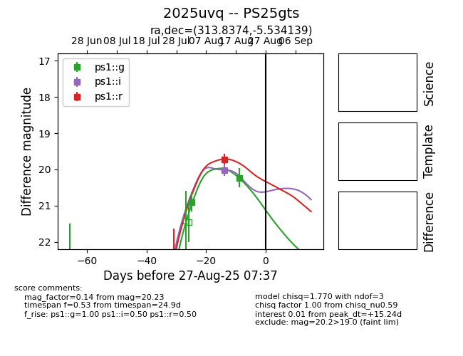

Target 2025uvq at 2025-08-27 09:47, see:
TNS: wis-tns.org/object/2025uvq
YSE: ziggy.ucolick.org/yse/transient_detail/2025uvq
alt names
2025uvq (yse,tns)
PS25gts (panstarrs)
coordinates:
equatorial (ra, dec) = (313.8374,-5.53414)
galactic (l, b) = (42.7562,-29.99488)
photometry
last ps1::g=20.23, ps1::i=20.01, ps1::r=19.72
2 ps1::g, 1 ps1::i, 1 ps1::r detections
